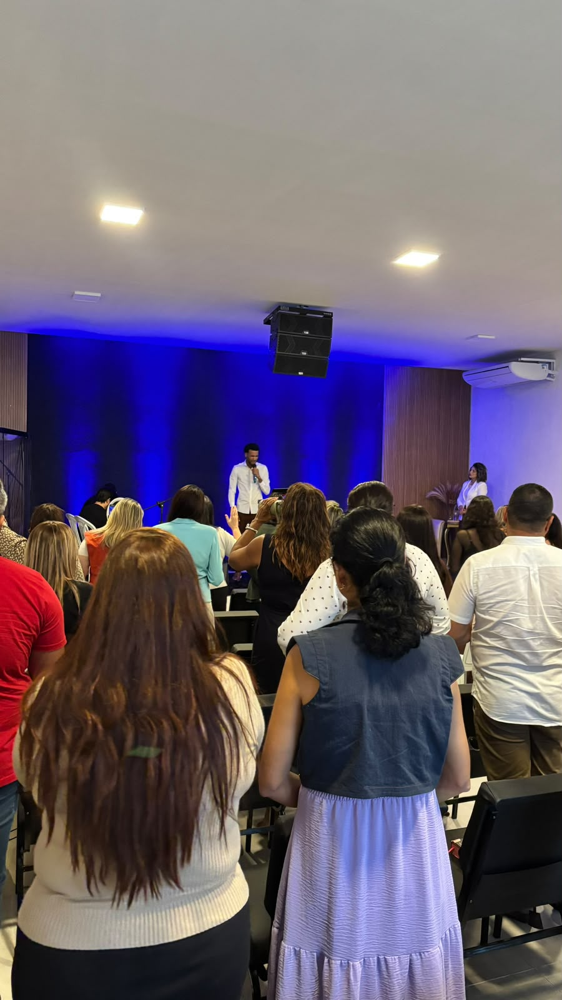
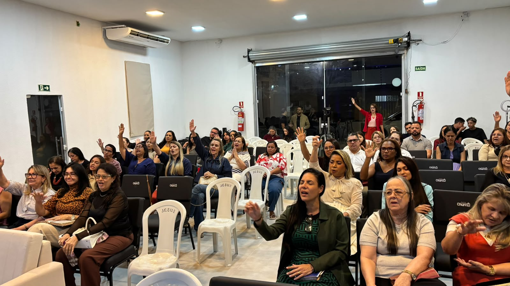
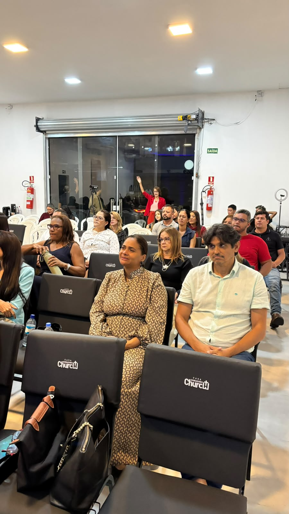
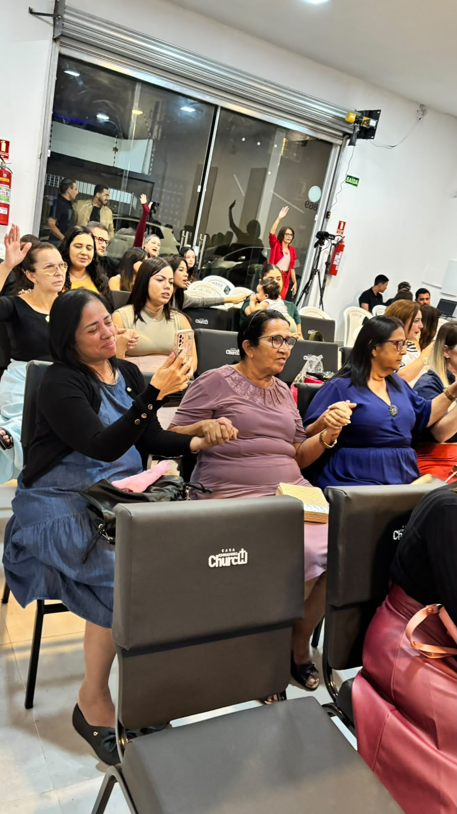

✎
Compartilhe
Escreva seu nome, WhatsApp e o pedido que está no seu coração.
Compartilhe seu pedido de oração com a nossa equipe. Pastor Fred Nicácio, Pastora Ariana Nicácio e nossa comunidade estarão em oração por você.
Você compartilha o que está vivendo. Nós recebemos com cuidado e colocamos seu pedido diante de Deus.
Escreva seu nome, WhatsApp e o pedido que está no seu coração.
Seu pedido é registrado com segurança e encaminhado à equipe responsável.
Nossa equipe apresenta sua vida e sua necessidade em oração.
O propósito é criar uma ponte simples entre você e uma comunidade que está disposta a ouvir, acolher e orar.
Coloque para fora aquilo que você tem carregado. Seu pedido merece ser acolhido.
Seu pedido chega diretamente à equipe responsável pelo ministério de oração.
Transforme uma preocupação em um momento de fé, entrega e esperança.
Você não precisa enfrentar cada fase sozinho. Existe uma comunidade com você.




Pastor Fred Nicácio e Pastora Ariana Nicácio construíram sua caminhada a partir de um desejo simples: servir pessoas, fortalecer famílias e criar um ambiente onde a fé possa ser vivida de forma próxima e verdadeira.

Ao longo da caminhada ministerial, Pastor Fred Nicácio e Pastora Ariana Nicácio aprenderam que cuidar de pessoas começa muito antes de uma palavra pública: começa com escuta, presença e disposição para caminhar junto. A experiência de servir famílias e acompanhar diferentes histórias fortaleceu neles a convicção de que a igreja deve ser um lugar de acolhimento e esperança.
O propósito do ministério é construir uma comunidade onde pessoas possam encontrar fé, cuidado, esperança e oração. Mais do que reunir pessoas, Pastor Fred Nicácio e Pastora Ariana Nicácio desejam criar relacionamentos que apontem para Deus e ajudem cada pessoa a descobrir que sua história tem valor.
A igreja é entendida como uma família em movimento: um lugar para pertencer, servir, crescer e caminhar com outras pessoas. Por isso, o cuidado não termina dentro de uma reunião. Ele continua nas conversas, nas orações, nas famílias e nos momentos em que alguém simplesmente precisa saber que não está sozinho.
Mais do que um lugar para reunir pessoas, somos uma comunidade que acredita em fé, cuidado, oração e relacionamentos verdadeiros.




Se você quiser conhecer a nossa comunidade pessoalmente, use o mapa para encontrar a Casa Adoradores Church e traçar a melhor rota a partir de onde estiver.
Veja a localização da igreja e confirme o ponto de destino.
Informe de onde você está e deixe o Google Maps calcular o melhor caminho.
De carro, transporte ou a pé, escolha a opção que funciona melhor para você.
Conte o que você está vivendo. Por padrão, pedimos seus dados para facilitar o cuidado e, se preferir, você pode escolher o envio anônimo.
Conte o que está vivendo
Não precisa encontrar as palavras perfeitas. Escreva do seu jeito.
Escolha sua privacidade
Você pode se identificar ou enviar o pedido de forma anônima.
Receba cuidado
Seu pedido chega à equipe responsável pelo ministério de oração.
Se você deseja ofertar ou entregar o seu dízimo, disponibilizamos esta opção de forma simples e segura. Sua contribuição ajuda a manter a igreja, os projetos e as ações de cuidado da nossa comunidade.
Use a chave PIX abaixo para realizar sua contribuição.
Que sua oferta seja uma expressão de fé, gratidão e amor. Deus abençoe sua vida e sua família.
Talvez você tenha chegado aqui procurando uma palavra. Pare por alguns segundos, respire e permita que um versículo seja o ponto de partida para sua reflexão de hoje.
Clique abaixo para sortear uma palavra.
Às vezes, tudo o que precisamos é parar por um instante e lembrar que Deus continua presente.
Sabemos que alguns pedidos carregam histórias muito pessoais. Por isso, sua mensagem é recebida com respeito, cuidado e discrição.
Ler Política de Privacidade →Somente a equipe responsável pelo ministério de oração pode visualizar os pedidos.
Identifique-se para facilitar um contato ou escolha enviar de forma anônima.
Os dados são utilizados exclusivamente para o atendimento do pedido, conforme a LGPD.